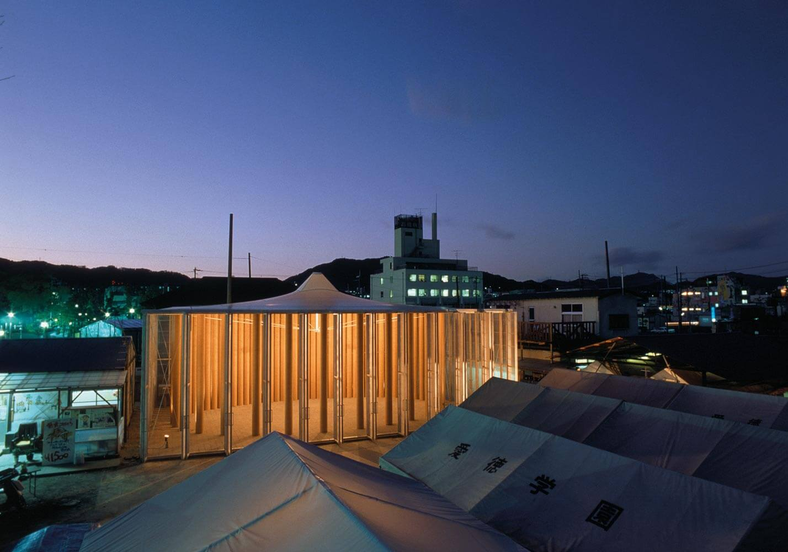
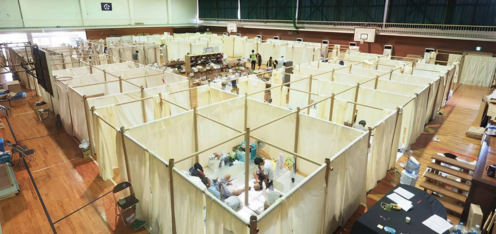
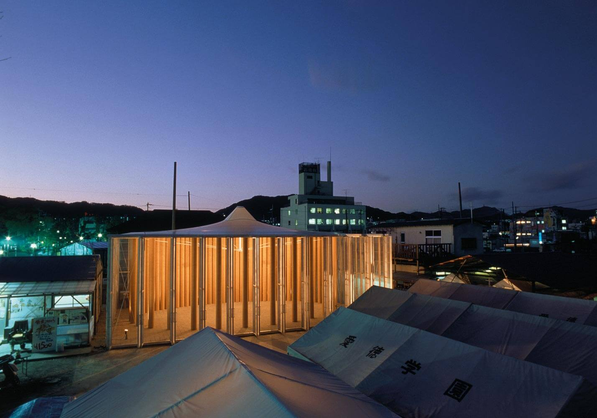
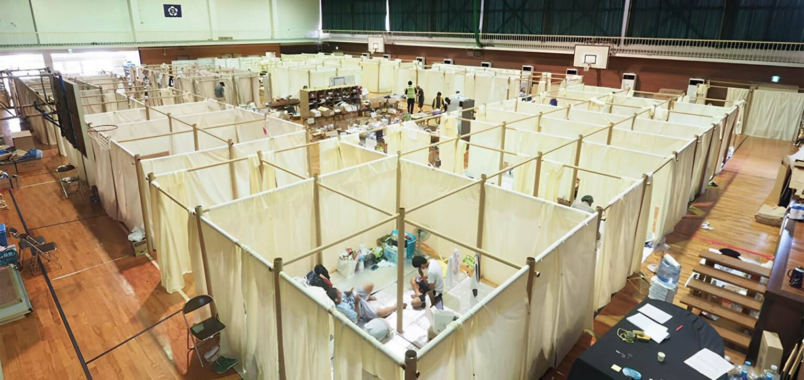

here are a few artists who inspire me.
shigeru ban
I find his work inspiring because of his commitment to sustainability through the use of paper tubes, helping those underprivileged communities, and contributing to disaster relief efforts globally.
 Centre Pompidou Metz — France, 2010

Paper Church — Kobe, Japan, 1995

Paper Partition System 4 — Japan, 2018
Centre Pompidou Metz — France, 2010

Paper Church — Kobe, Japan, 1995

Paper Partition System 4 — Japan, 2018
lauren hom
I find her work inspiring because of her creative incorporation of food (who doesn’t love food?) into art. In addition, her work makes me smile because of her use of bright and vibrant colors and the creative lettering.
stephen sagmeister
I admire his ability to take an emotion and be able to create a visual concept or display to represent and evoke that feeling. His work really evokes a sense of the need to think critically when viewing work.